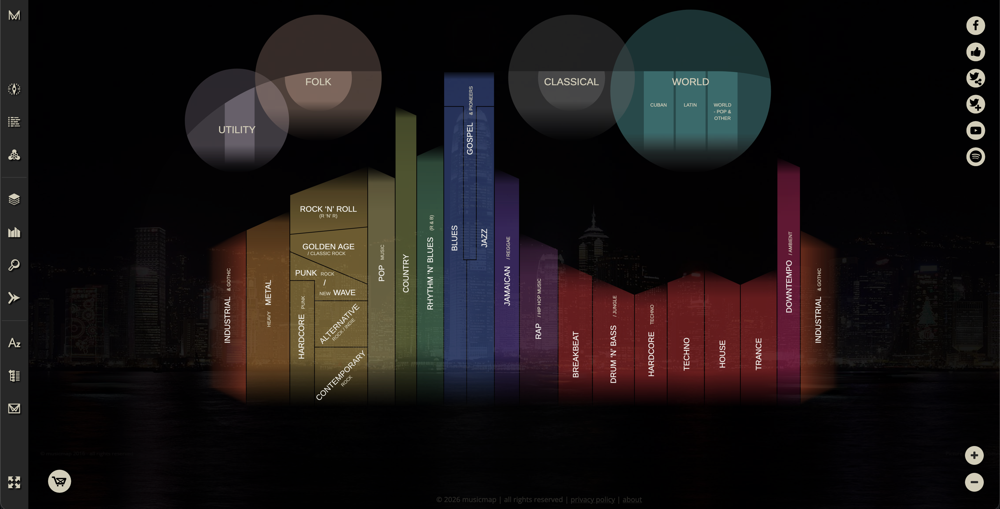
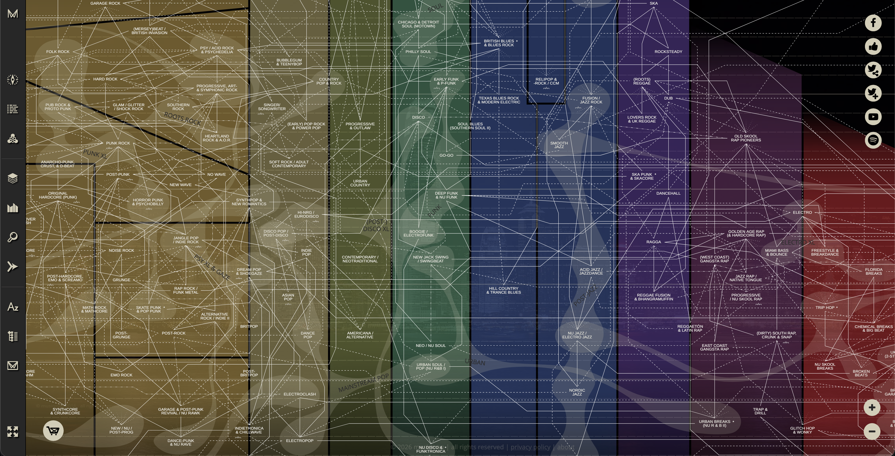
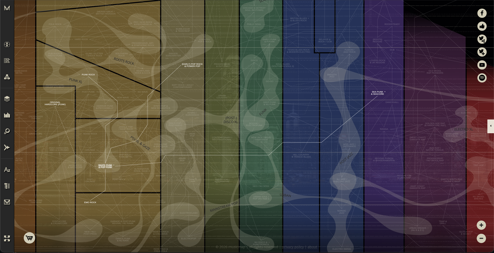
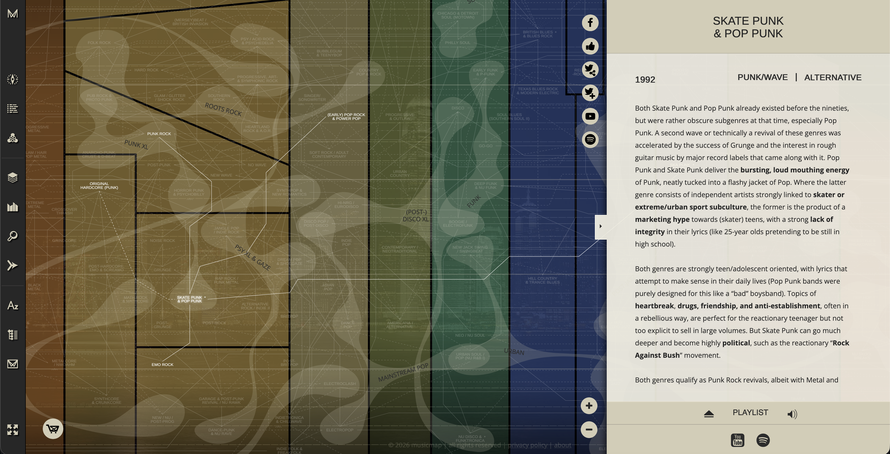
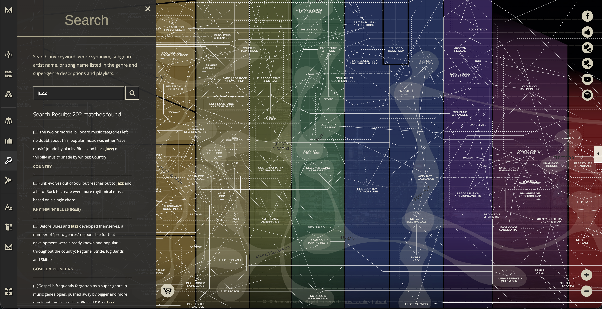
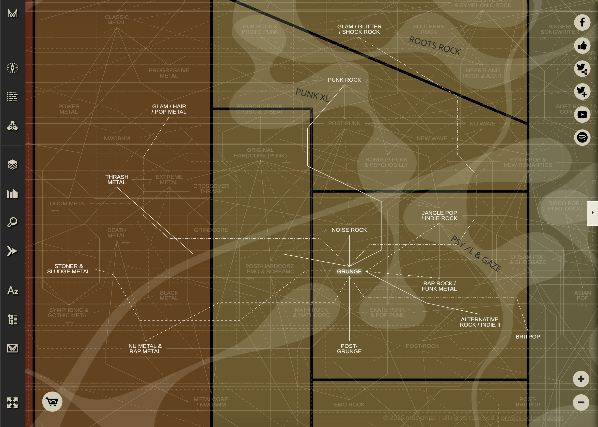
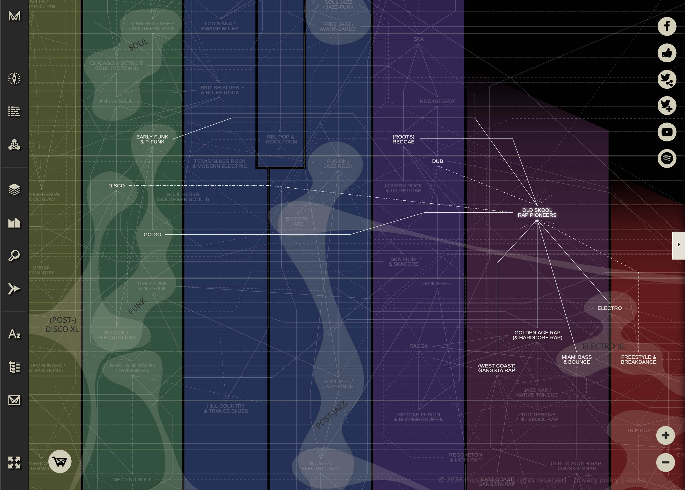

Introduction
Musicmap is an interactive data visualization created by Belgian researcher Kwinten Crauwels that attempts what the site calls "the ultimate genealogy of popular music genres." It plots 234 genres organized into 23 super-genres against a vertical timeline running roughly from 1880 to 2020, and connects them with three kinds of lines: primary influences, secondary influences, and backlashes, which are genres that emerged as direct reactions against their predecessors.
I chose Musicmap because of my love for music, so I wanted to find something that represented music in a unique way. I found Musicmap through online research into music visualizations and was drawn the unique way it displays how music genres inspired others either directly or indirectly.

Purpose
Crauwels states six goals for the project on the site's About page. Condensed, they are:
- Teach the fundamentals of popular music genres to anyone, regardless of background.
- Inspire people to explore music outside their usual preferences.
- Provide a reference for music database standardization.
- Serve as a collaborative platform for refining genre definitions over time.
- Promote nuanced genre discussion and discourage oversimplification.
- Reduce genre-based prejudice by giving each genre historical context.
The visualization delivers strongest on goals one, two, and six. The Carta is genuinely readable at a high level even for someone with no music theory background, and the nine-song playlists attached to every genre make exploration a natural loop: hover an adjacent genre, click, listen, decide whether you want to go further. The historical and cultural context in each description does real work against lazy genre stereotyping, which supports the anti-prejudice goal in practice rather than just as a slogan.
The other three goals feel more aspirational than delivered. Goal four, the collaborative platform, is the weakest: the site is effectively static, with no mechanism for users to propose revisions or submit alternative lineages. Goal three, database standardization, is partially met in that the taxonomy is structured and consistent, but true standardization would require community consensus rather than a single curator's call. And goal five, promoting nuance, is a half-delivery: the three relationship types do add nuance, but the rigid super-genre columns themselves force an oversimplification that the encoding then has to fight against.
The Data
The underlying dataset is the result of over seven years of research drawing from more than 200 academic sources, including music histories, encyclopedias, documentaries, and specialist websites. Each genre in the dataset carries:
- A name and super-genre grouping (e.g. "Bebop" belongs to "Jazz")
- An origin year and geographic origin
- A prose description of the genre's defining characteristics
- A curated nine-song example playlist
- A list of primary parents, secondary influences, and backlash relationships to other genres
Because genres are organic cultural phenomena rather than discrete objects, Crauwels is explicit that the map represents a retrospective interpretation rather than ground truth. The data was captured manually by a single curator and his collaborators, which is both the project's greatest strength (careful, researched curation) and its fundamental limitation (one person's interpretation of a contested taxonomy).
Intended Audience
Musicmap is pitched broadly. Crauwels says the site is for "anyone, regardless of age and education." In practice the tool rewards two distinct user types: curious listeners who want to discover new genres adjacent to what they already like, and music writers, researchers, and database curators who need a reference for genre lineage. The nine-song playlists per genre make the map immediately useful to the former group, while the structured relationship data serves the latter.
Walking Through the Tool
The Carta
The main view is a large pannable, zoomable canvas called the "Carta," where each genre appears as a labeled node. Time runs vertically with older genres at the top and newer ones at the bottom, and super-genres are spread horizontally, each with its own color. Zooming out collapses the view to just the 23 super-genres; zooming in reveals the full 234-genre detail.

Hover and Relationship Highlighting
Hovering over a genre highlights all of its relationships (parents, children, secondary influences, and backlashes) while dimming everything else. This is the single most effective interaction in the tool: the Carta is visually dense by necessity, and the hover state transforms it from a wall of labels into a focused subgraph about one genre.

Genre Detail Panel
Clicking a genre opens a side panel with its full description, origin year and region, and the nine-song playlist embedded via external music services. The playlist is what makes the detail panel more than a Wikipedia clone, since you can actually hear what "Darkwave" or "Tuareg Blues" sounds like without leaving the page.

Search and Browse
A keyword search scans genre names, descriptions, and playlists, which is useful when you know a song or artist but not the genre. An alphabetical list view offers a flat index as a fallback for users who want to navigate without the spatial metaphor.

Questions and Insights
The visualization is well-suited to questions like: Where did this genre come from? What other genres share its lineage? What emerged as a reaction against it? What was happening in music in a given decade? Because time is the vertical axis, you can read horizontal "slices" of the map as snapshots of the musical landscape at any point in the last 140 years.
Insight 1: Grunge as a two-sided backlash node
Hovering on Grunge reveals an unusual structural position: it is both the result of a backlash and the target of one. The Carta draws incoming anti-links to Grunge from Glam / Hair / Pop Metal and Glam / Glitter / Shock Rock, which is the canonical "Nirvana killed hair metal" story drawn as a line. Musicmap's own genre description puts it plainly: "The focus on glamour and fashion in many eighties' music formed the catalyst of a fierce anti-movement." Grunge's dressed-down aesthetic, distorted guitars, and introspective lyrics were a deliberate repudiation of late-80s metal spectacle.
But there is also an outgoing anti-link from Britpop back to Grunge, and Musicmap's copy for Britpop makes the relationship explicit: "If every reaction has a 're-reaction', then Britpop is the re-reaction to Grunge (since Grunge was a reaction itself against Glam Metal)." Oasis, Blur, and Pulp positioned themselves against American grunge's miserabilism and reclaimed melodic British guitar pop as a brighter, cockier cultural posture.
The full chain reads: Glam Metal → [backlash] → Grunge → [backlash] → Britpop. That is a complete generational pivot, captured in two line-styles on a single screen. Most genre taxonomies cannot represent this kind of oppositional lineage because they only model "A influenced B." Musicmap's anti-link encoding makes a real force in music history legible at a glance, and the prose descriptions use the exact same framing as the lines do, which is a small but nice bit of internal consistency between the two views of the same data.
On top of the backlash pattern, Grunge's primary influences cut across super-genre columns: Punk, Thrash Metal, and Noise Rock all feed in as parents, with Jangle Pop / Indie Rock as a secondary influence. Musicmap's description sums it up as "one part Metal, one part Hardcore/Rock", and on the Carta this reads as solid lines stretching across the grid from multiple directions. Classic Metal also reaches Grunge as a deeper ancestor through Thrash Metal, so the multi-hop lineage and the genre prose line up once you trace it. Grunge is exactly the kind of hybrid genre the rigid super-genre layout is forced to dramatize rather than hide.

Insight 2: What an anti-link really means - Old Skool Rap and Disco
Hovering on Old Skool Rap Pioneers pulls in primary-influence lines from Early Funk & P-Funk, Go-Go, and (Roots) Reggae, and an anti-link back to Disco. The anti-link is surprising at first, because Musicmap's own description of Old Skool Rap calls Disco a "large influence" and names the New York club Disco Fever as the place where rap first reached a crowd. If Disco was such a formative influence, why is the line encoded as a backlash?
The answer is a useful framing of what an anti-link actually represents on this map. Old Skool Rap was not a direct ideological anti-influence to Disco; it was an evolutionary offshoot that repurposed Disco's musical foundations while rejecting its mainstream, commercial, hedonistic culture. Early hip-hop was literally built on playing, mixing, and rapping over Disco and Funk records, but by the early 1980s it had developed into a distinct counterculture that effectively replaced the Disco era in New York City. The "against" in the anti-link is cultural and class-based, not sonic. Rap took Disco's records and turned them into something the Studio 54 scene could not have imagined: a platform for the voices of the South Bronx, a poor and largely Black and Latino neighborhood that Disco's Manhattan glamour had locked out.
This makes the Disco anti-link a good teaching example of what Musicmap's backlash encoding can and cannot show. The graph captures the "against" relationship cleanly, but the nature of the opposition (sonic, cultural, audience, or attitude) has to come from the prose. The anti-link is a pointer; the description is the story.
Beyond the Disco dynamic, Old Skool Rap is a major hub on the Carta. Solid outgoing lines connect it to West Coast Gangsta Rap, Golden Age Rap & Hardcore Rap, Miami Bass & Bounce, Electro, and Freestyle & Breakdance. Essentially all modern Hip-Hop descends from this tiny South Bronx scene, making it one of the clearest examples on the map of how a single localized experiment can seed an entire super-genre. The incoming primary lines are equally localized in their own way: Jamaican DJ Kool Herc brought the sound-system concept directly from Kingston to the Bronx, which is why (Roots) Reggae is a primary parent even though it sits in an entirely different super-genre column.

Design Critique
What Works
- Time as a vertical axis is legible at a glance. You don't need a legend to understand that lines going downward mean "this genre influenced that later one."
- Backlash as a first-class relationship type is unusual and thoughtful. Most music taxonomies only encode "derived from." Musicmap acknowledges that genres also emerge in opposition to others, and encodes that visually.
- Super-genre color coding lets you spot large families from far away, which is essential given the information density.
- Embedded playlists collapse the gap between label and listening. Every abstract genre name is one click from an actual song.
What Could Be Better
- The rigid grid fights the data. Genres don't respect tidy super-genre boundaries (Hip Hop draws from Funk, Disco, and Jamaican Dub), but the horizontal axis forces each genre into one column, which stretches cross-super-genre lines across the whole canvas and makes them hard to follow.
- No filter by relationship type. You can't say "show me only backlashes" or "hide secondary influences" to reduce clutter. The three line styles are distinguishable but visually noisy when overlapping.
- Time is non-linear but presented as linear. Musical innovation clusters (the 1970s alone produced dozens of the mapped genres), but the vertical axis doesn't signal this, so dense eras look the same as sparse ones.
Limitations
A few things the tool cannot do:
- No quantitative data. Musicmap encodes relationships as categorical (primary / secondary / backlash) without any weight or strength. It can't tell you how much Blues influenced Rock vs. Jazz.
- No geographic dimension on the main view. Each genre has an origin region in its detail panel, but you can't see the global flow of musical ideas across continents on the Carta itself.
- Frozen in time. The data ends around 2020 and is not collaboratively updated despite the stated goal of community contribution. Hyperpop, drill, and other late-2010s / early-2020s developments are underrepresented.
- One curator's interpretation. The "ultimate genealogy" framing oversells what is fundamentally one person's structured opinion. There's no mechanism for showing alternative lineages or contested relationships.
Closing Thoughts
Musicmap is an ambitious and genuinely useful piece of information design. Its most original contribution is the backlash encoding, which makes a real force in music history (the generational push against what came before) legible on the same canvas as the more conventional "A influenced B" relationships. The Grunge and Old Skool Rap examples above only work as insights because of that extra line type. On most genre maps they would collapse into uninteresting "derived from" relationships.
The project's limits are mostly a function of its scope. Trying to represent 140 years of popular music on a single 2D grid will always force compromises, and Musicmap's compromises (rigid super-genre columns, uniform time spacing, no relationship weighting, no community input) are visible from the first zoom. Those compromises are worth discussing precisely because the tool otherwise works so well. It is rare for a visualization to raise the specific questions you wish it would answer. Musicmap does, and that is a sign it is doing more right than wrong.